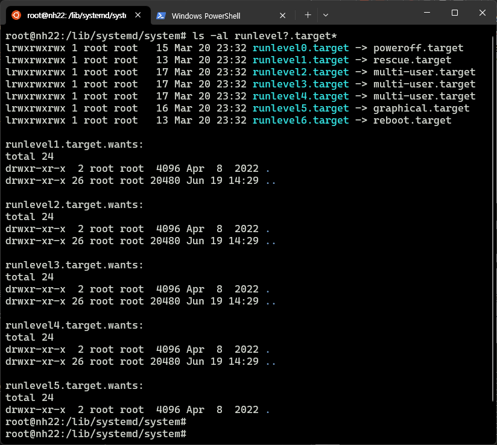

CPU를 1600X에서 5700X로 업그레이드를 진행하기에 앞서,
RunLevel(런레벨/부트레벨)에 대해 한번 메모하고자 함.
Runlevel
-
7가지 레벨이 존재
- man runlevel 참고
-
Level 5을 제외하고는, cli 환경에서만 구동
-
Linux Standard Base 기준
ls -l /lib/systemd/system/runlevel?.target명령어로 확인 가능
| RunLevel | EN | 설명 | 비고 |
|---|---|---|---|
| 0 | Power Off | 시스템 종료(중단/Halt) | |
| 1 | Rescue | 시스템 복구 | 단일 사용자 모드 |
| 2 | Multi-User | 다중 사용자(텍스트 모드, 네트워크 서비스 X) | 사용 X (사용자 정의 가능) |
| 3 | Multi-User | 다중 사용자(텍스트 모드) | |
| 4 | Multi-User | 상동 | 사용 X (사용자 정의 가능) |
| 5 | Graphical | 다중 사용자 모드 (그래픽 모드) | X-window 기반 |
| 6 | Reboot | 시스템 리부팅 |
운영체제(Ubuntu 22.04 기준)내 확인
- su 모드에서. target을 기반으로 링킹되어 있음을 확인
ls -al /lib/systemd/system/runlevel?.target: defaultls -al /etc/systemd/system | grep runlevel?.target.wants: 사용자 정의용 폴더
sudo su
ls -l /lib/systemd/system/runlevel?.target*

- 타겟 변경의 경우, 아래 lesstif를 참조
Reference

kkumtree
Source code on GitHub
© 2024 kkumtree and contributors All rights reserved.
Licensed under
CC BY-NC-ND 4.0